Se creó EARTH-LOADING
Con ello, se añadieron los primeros datos sobre fauna marina y astronomía.
Se creó también el sistema de actualizaciones.
Se presentarán los boletines de manera semanal, junto a nuevos datos y opciones.
Dato 1 de 8
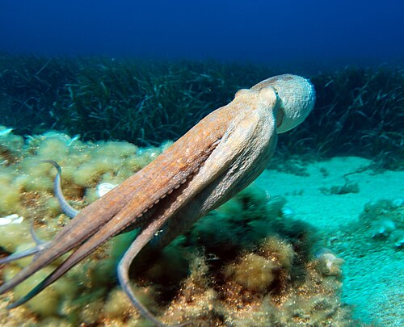
Los pulpos son animales marinos conocidos por su inteligencia, sus ocho brazos y su capacidad para cambiar de color y textura.
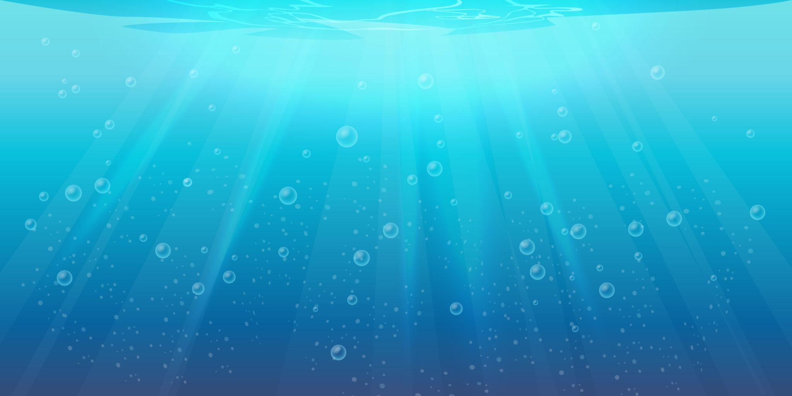
Dive into the blue
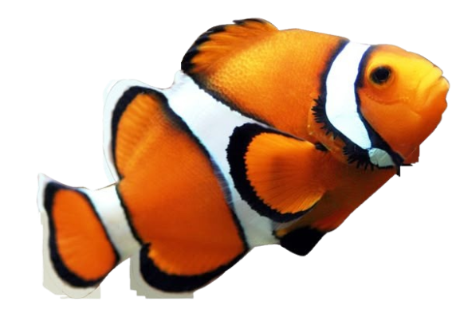
Nada entre las profundidades, esquiva los obstáculos y descubre cuánto puedes avanzar.
El océano aún guarda más aventuras.
Puntuación: 0
Record: 0
PATCH NOTES
V.2.26.10.2
Con ello, se añadieron los primeros datos sobre fauna marina y astronomía.
Se creó también el sistema de actualizaciones.
Se presentarán los boletines de manera semanal, junto a nuevos datos y opciones.
EARTH-LOADING · EXPLORAR
Descubre los ecosistemas de nuestro planeta y las formas de vida que los habitan.
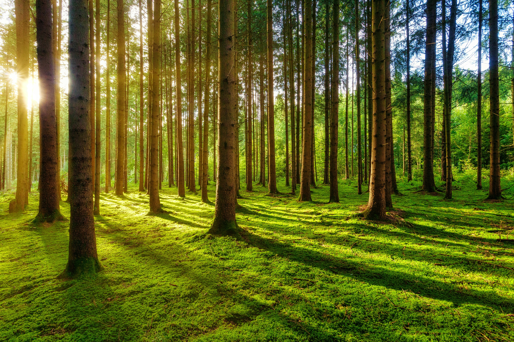
Selvas y bosques 🌳Lugares llenos de vida donde plantas, animales, hongos y microorganismos interactúan entre sí.
🌱 ¿Sabías que...? Los bosques también ayudan a regular el clima y el ciclo del agua.
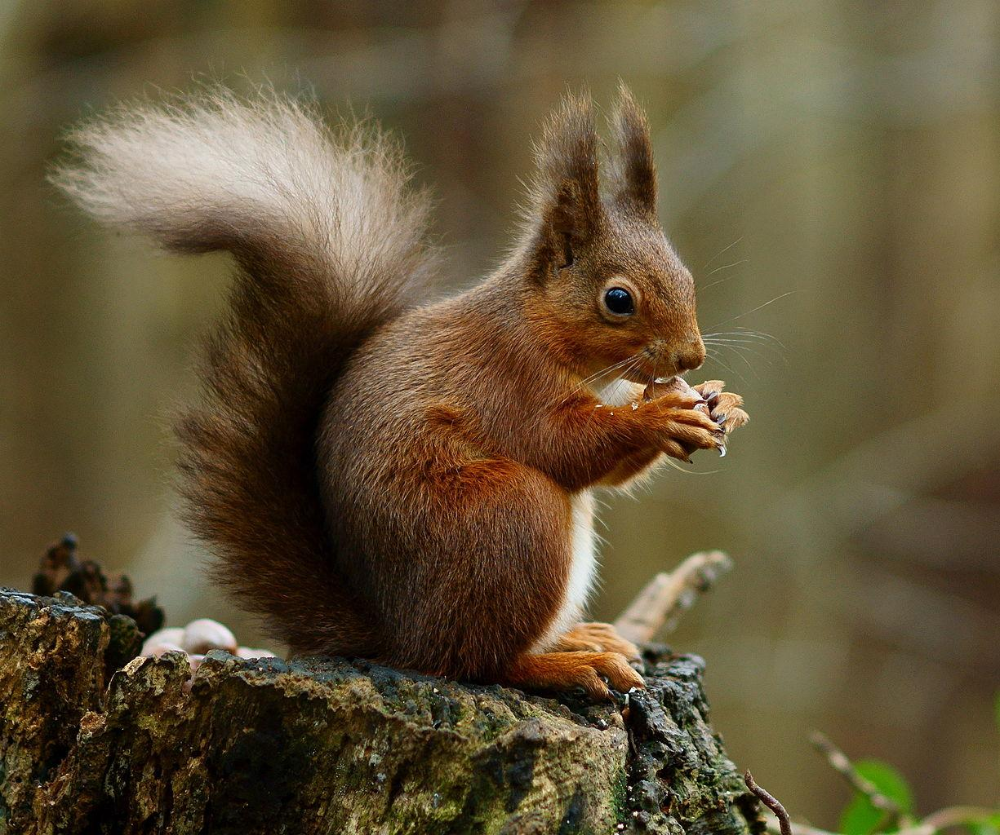
ANIMAL
Sciurus vulgaris
Ayuda a dispersar semillas y contribuye a la regeneración del bosque.
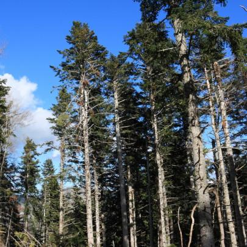
PLANTA
Abies alba
Es una conífera de montaña que conserva sus hojas durante todo el año.
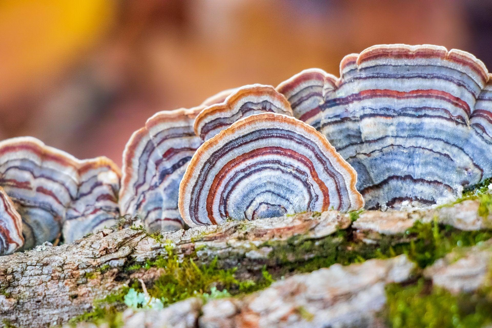
HONGO
Trametes versicolor
Crece sobre madera y ayuda a reciclar nutrientes al descomponerla.
 Desiertos 🏜️
Desiertos 🏜️
Ecosistemas donde la escasez de agua obliga a los seres vivos a desarrollar adaptaciones sorprendentes.
🦎 ¿Sabías que...? Algunos animales del desierto evitan las horas más calurosas y son activos durante la noche.
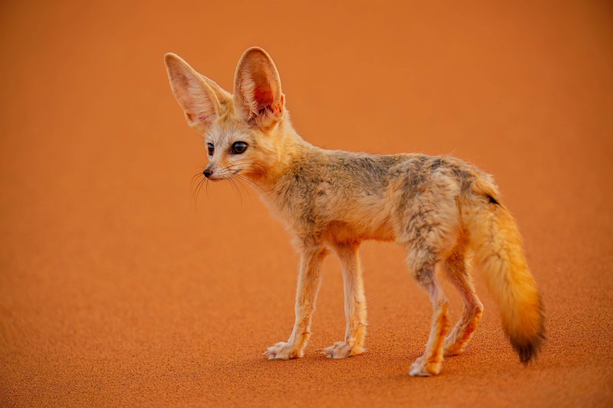
ANIMAL
Vulpes zerda
Sus grandes orejas le ayudan a disipar el calor y a detectar sonidos. Está adaptado a la vida en zonas áridas.
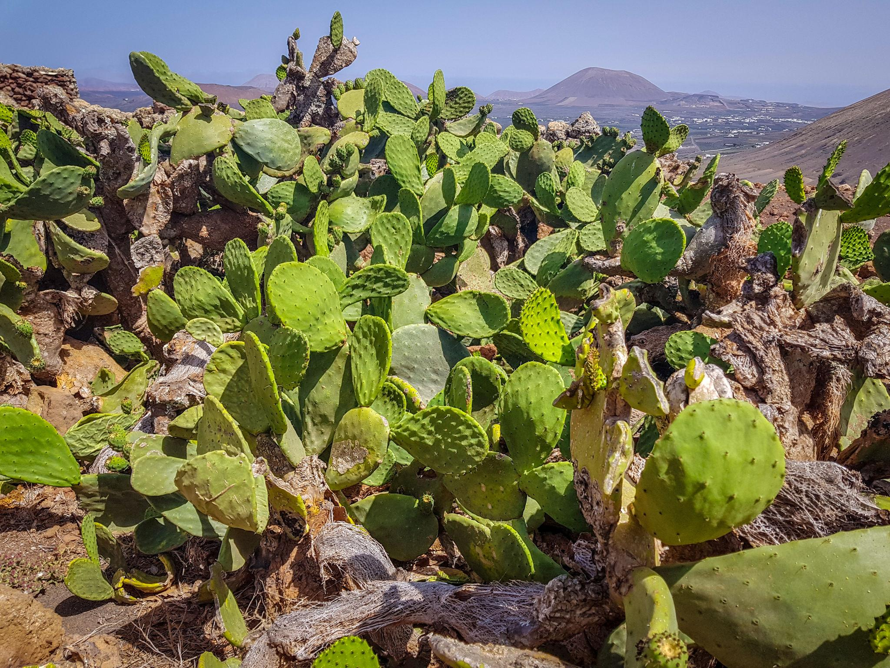
PLANTA
Opuntia ficus-indica
Sus tallos almacenan agua, lo que le permite sobrevivir en ambientes secos. También se cultiva por sus frutos.
HONGO
Terfezia arenaria
Crece bajo tierra y puede asociarse con las raíces de ciertas plantas, ayudándolas a obtener nutrientes.
Desde las costas hasta las profundidades, los océanos albergan una enorme diversidad de organismos.
¿Sabías que...? Algunos organismos marinos producen su propia luz mediante bioluminiscencia.
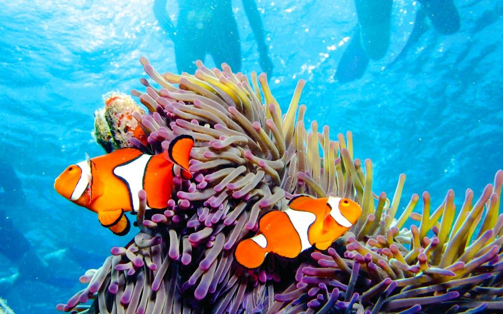
ANIMAL
Amphiprion ocellaris
Vive asociado a ciertas anémonas marinas, con las que mantiene una relación beneficiosa para ambos.
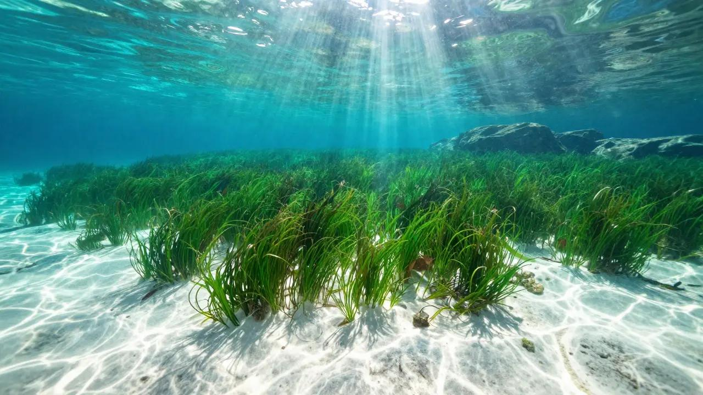
PLANTA
Posidonia oceanica
Forma praderas submarinas mediterráneas que ofrecen refugio a muchas especies y ayudan a proteger las costas.
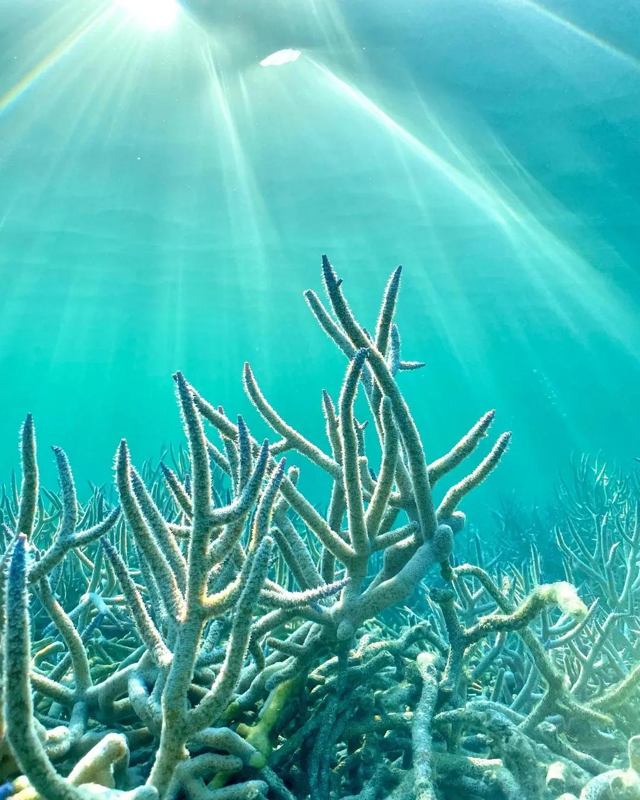
ANIMAL
Acropora cervicornis
Sus ramas crean refugios para otros organismos y contribuyen a formar arrecifes coralinos.
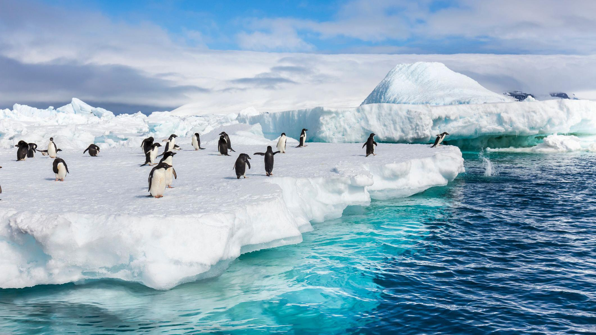
Regiones polares 🧊Ambientes fríos donde la vida encuentra maneras de adaptarse a condiciones extremas.
🐧 ¿Sabías que...? No todos los animales polares viven en ambos polos: los pingüinos silvestres, por ejemplo, viven en el hemisferio sur.
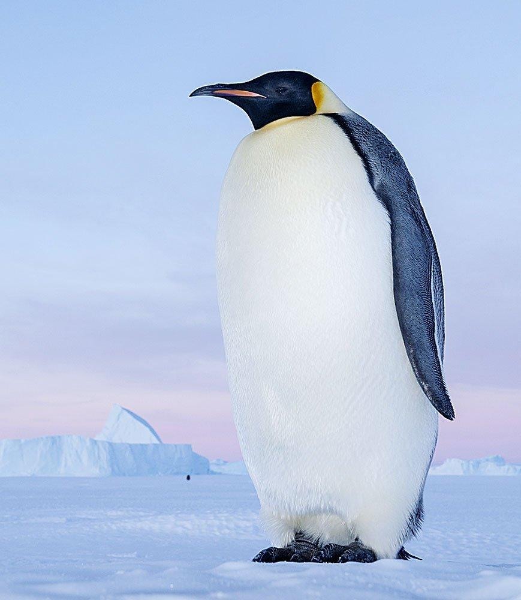
ANIMAL
Aptenodytes forsteri
Vive en la Antártida y está adaptado al frío extremo. Es el pingüino más grande del mundo.
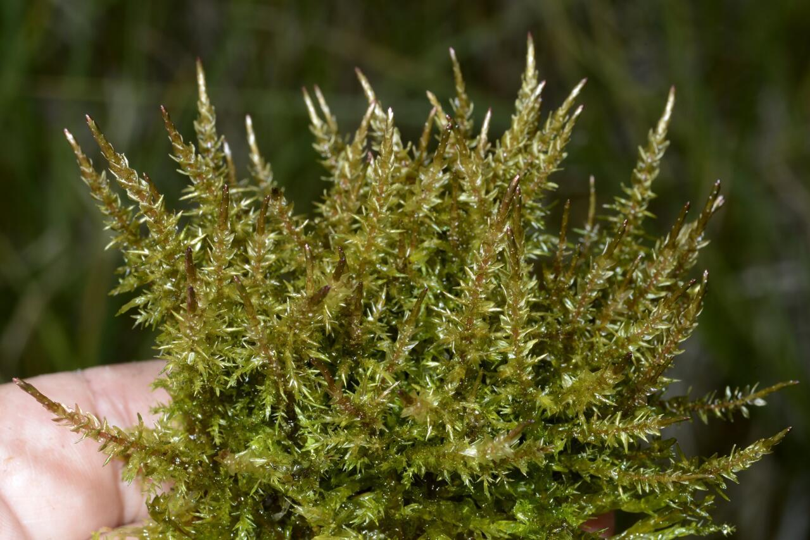
PLANTA
Calliergon giganteum
Crece en zonas húmedas de la tundra ártica y puede sobrevivir a temporadas muy frías.
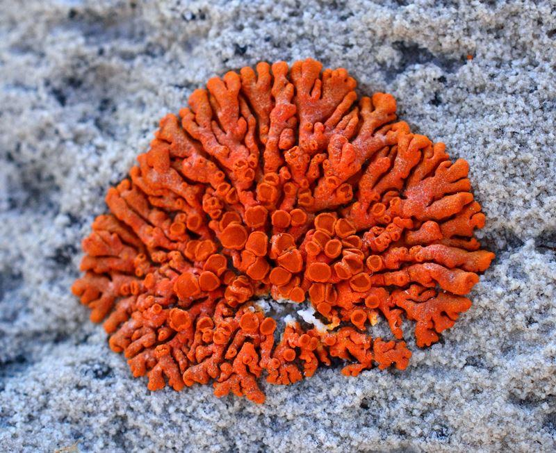
LIQUEN
Xanthoria elegans
Crece sobre rocas y tolera condiciones ambientales muy duras. Su color anaranjado destaca entre el hielo y la nieve.